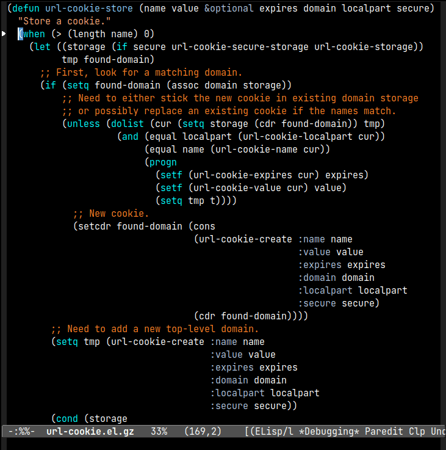
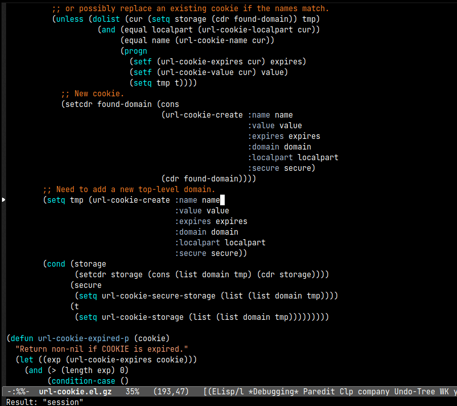
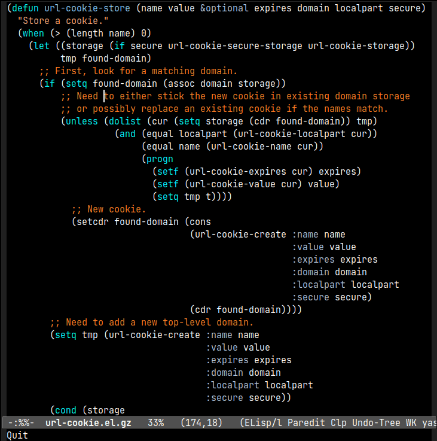
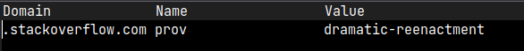
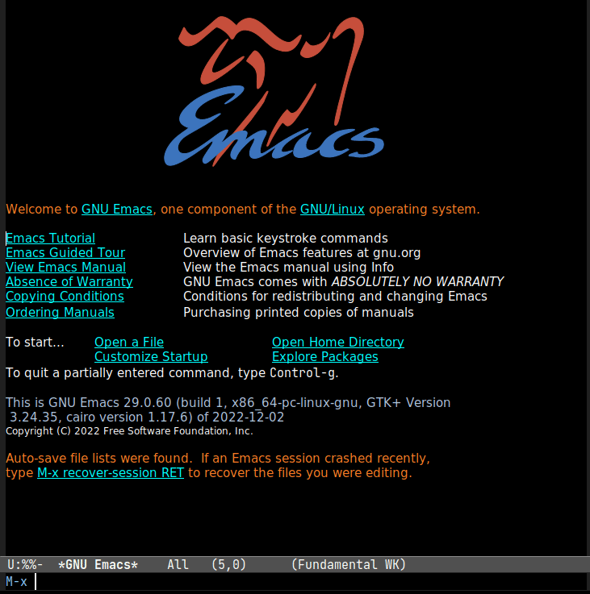

<!doctype html>
<html lang="en">
    <head>
        <meta charset="utf-8">
        <meta http-equiv="x-ua-compatible" content="ie=edge">
        <meta name="viewport" content="width=device-width, initial-scale=1">
        <title>Jon Eskin's Blog - Debugging Emacs Lisp</title>
        <link rel="stylesheet" href="../css/default.css" />
        <link rel="alternate" type="application/rss+xml" title="Jon Eskin's Blog RSS" href="../rss.xml" />
    </head>
    <body>
        <header>
            <div class="logo">
                <a href="../">Jon Eskin's Blog</a>
            </div>
            <nav>
                <a href="../">Home</a>
                <a href="../about.html">About</a>
                <a href="../rss.xml">RSS</a>
            </nav>
        </header>

        <main role="main">
            <h1>Debugging Emacs Lisp</h1>
            <article>
    <section class="header">
        Posted on December  6, 2022
        
            by Jon Eskin
        
    </section>
    <section>
        <p>In this post, I’ll show how I used basic capabilities of the built-in <a href="https://www.gnu.org/software/emacs/manual/html_node/elisp/Edebug.html">Emacs Lisp debugger</a> such as suspending execution, stepping through code, and adding watchpoints to solve a day-to-day issue.</p>
<h2 id="downloading-problems">Downloading Problems</h2>
<p>I recently stumbled upon an <a href="https://github.com/keegancsmith/advent/blob/master/advent.el">Advent of Code utility</a> which lets you authenticate with the advent of code server via <code>M-x advent-login</code> and download your daily input file with <code>M-x advent-input</code>.</p>
<p>When I ran <code>advent-login</code> followed by <code>advent-input</code>, instead of receiving my input file, Emacs printed an HTTP 400 error in the message area.</p>
<p>To find out why, I opened up <code>advent.el</code> and started with the function definition of <code>advent-login</code>:</p>
<div class="sourceCode" id="cb1"><pre class="sourceCode lisp"><code class="sourceCode commonlisp"><span id="cb1-1"><a href="#cb1-1" aria-hidden="true" tabindex="-1"></a>(<span class="kw">defun</span><span class="fu"> advent-login </span>(session)</span>
<span id="cb1-2"><a href="#cb1-2" aria-hidden="true" tabindex="-1"></a>  <span class="st">&quot;Login to adventofcode.com.</span></span>
<span id="cb1-3"><a href="#cb1-3" aria-hidden="true" tabindex="-1"></a><span class="st">Argument SESSION session cookie value.&quot;</span></span>
<span id="cb1-4"><a href="#cb1-4" aria-hidden="true" tabindex="-1"></a>  (interactive <span class="st">&quot;sValue of session cookie from logged in browser: &quot;</span>)</span>
<span id="cb1-5"><a href="#cb1-5" aria-hidden="true" tabindex="-1"></a>  (url-cookie-store <span class="st">&quot;session&quot;</span> session <span class="st">&quot;Thu, 25 Dec 2027 20:17:36 -0000&quot;</span> <span class="st">&quot;.adventofcode.com&quot;</span> <span class="st">&quot;/&quot;</span> <span class="kw">t</span>))</span></code></pre></div>
<p>I wasn’t familiar with the <code>url-cookie-store</code>, or Emacs’s URL capabilities in general, so I placed my cursor on <code>url-cookie-store</code> and hit <code>M-.</code> to hop to its definition. I skimmed the <a href="https://github.com/emacs-mirror/emacs/blob/master/lisp/url/url-cookie.el">source file</a> it’s found in, noting the top-level functions and variables and reading their docstrings.</p>
<p>From the source code, I noted that cookies stored in variables <code>url-cookie-storage</code> and <code>url-secure-cookie-storage</code>, and that you can list currently stored cookies with <code>M-x url-cookie-list</code>.</p>
<h2 id="step-debugging-a-function">Step Debugging a Function</h2>
<p>Next I decided to step through the execution of the function <code>url-cookie-store</code>. To debug a Lisp function in Emacs, you can move your cursor inside the function and enter <code>C-u C-M-x</code>, which executes <code>eval-defun</code> with a prefix argument.</p>
<p>The next time the function is called, Emacs will switch to a source buffer showing the code you are debugging. Execution is stopped, and the editor is awaiting a <a href="https://www.gnu.org/software/emacs/manual/html_node/elisp/Debugger-Commands.html">debugger command</a>.</p>
<p>The function will continue to trigger debugging each time it’s run until you re-evaluate it without a prefix argument by placing your cursor inside the function and entering just <code>C-M-x</code>.</p>
<p>After instrumenting <code>url-cookie-store</code> for debugging, I triggered it by invoking <code>advent-input</code>. Here’s how that looks in practice:</p>
<figure>

<figcaption aria-hidden="true">edebug-intro</figcaption>
</figure>
<p>Stepping through Lisp code follows the rules of <a href="https://mitp-content-server.mit.edu/books/content/sectbyfn/books_pres_0/6515/sicp.zip/full-text/book/book-Z-H-10.html#%_sec_1.1.5">applicative order evaluation</a>, meaning form arguments are evaluated first, followed by the form itself.</p>
<p>(There are a few exceptions to the evaluation order, such as the special form <code>if</code> or the macro <code>when</code>, which modify the flow of control, as you can see above.)</p>
<p>Each time an argument or form is evaluated, the result is displayed in the bottom message area.</p>
<figure>

<figcaption aria-hidden="true">edebug2</figcaption>
</figure>
<p>By repeatedly pressing <code>n</code>, I was able to step through and see that <code>url-cookie-create</code> called, and its return value (stored in the variable <code>tmp</code>) is bound to <code>url-cookie-secure-storage</code> in a <code>setq</code> expression.</p>
<p>After the function finished, I ran <code>url-cookie-list</code> and saw that a cookie for domain <code>.adventofcode.com</code> was indeed created.</p>
<figure>

<figcaption aria-hidden="true">cookies</figcaption>
</figure>
<p>With the cookie visible, <code>advent-input</code> still failed with a 400 error.</p>
<p>At this point, I re-ran <code>url-cookie-list</code> and found that the cookie was gone and had been replaced by an unrelated StackOverflow session cookie at some point during the execution of <code>advent-input</code> even though I hadn’t visited the site between the two commands.</p>
<figure>

<figcaption aria-hidden="true">stackoverflow</figcaption>
</figure>
<div class="sourceCode" id="cb2"><pre class="sourceCode lisp"><code class="sourceCode commonlisp"><span id="cb2-1"><a href="#cb2-1" aria-hidden="true" tabindex="-1"></a>(<span class="kw">defun</span><span class="fu"> advent-input </span>(&amp;optional day)</span>
<span id="cb2-2"><a href="#cb2-2" aria-hidden="true" tabindex="-1"></a>  <span class="st">&quot;Load todays adventofcode.com input in other window.</span></span>
<span id="cb2-3"><a href="#cb2-3" aria-hidden="true" tabindex="-1"></a><span class="st">Optional argument DAY Load this day instead.  Defaults to today.&quot;</span></span>
<span id="cb2-4"><a href="#cb2-4" aria-hidden="true" tabindex="-1"></a>  (interactive <span class="st">&quot;P&quot;</span>)</span>
<span id="cb2-5"><a href="#cb2-5" aria-hidden="true" tabindex="-1"></a>  (<span class="kw">let*</span> ((year (format-time-string <span class="st">&quot;%Y&quot;</span>))</span>
<span id="cb2-6"><a href="#cb2-6" aria-hidden="true" tabindex="-1"></a>         (day (<span class="kw">or</span> day (advent--day)))</span>
<span id="cb2-7"><a href="#cb2-7" aria-hidden="true" tabindex="-1"></a>         (url (<span class="kw">format</span> <span class="st">&quot;https://adventofcode.com/%s/day/%d/input&quot;</span> year day))</span>
<span id="cb2-8"><a href="#cb2-8" aria-hidden="true" tabindex="-1"></a>         (dir (<span class="kw">format</span> <span class="st">&quot;%s/%s/%d&quot;</span> (expand-file-name advent-dir) year day))</span>
<span id="cb2-9"><a href="#cb2-9" aria-hidden="true" tabindex="-1"></a>         (file (<span class="kw">format</span> <span class="st">&quot;%s/input&quot;</span> dir)))</span>
<span id="cb2-10"><a href="#cb2-10" aria-hidden="true" tabindex="-1"></a>    (<span class="kw">if</span> (<span class="kw">not</span> (file-exists-p file))</span>
<span id="cb2-11"><a href="#cb2-11" aria-hidden="true" tabindex="-1"></a>        (url-retrieve url <span class="dt">'advent--download-callback</span> (<span class="kw">list</span> file))</span>
<span id="cb2-12"><a href="#cb2-12" aria-hidden="true" tabindex="-1"></a>      (find-file-other-window file))))</span></code></pre></div>
<p>The problem was almost certainly going to be found somewhere in <code>url-retrieve</code>. But rather than hunt through the source, I decided to use a watchpoint to more easily track down what was changing <code>url-cookie-secure-storage</code>.</p>
<h2 id="adding-a-watchpoint">Adding a Watchpoint</h2>
<p>In debuggers, a “watch” refers to a mechanism that helps you observe when a variable changes.</p>
<p>In Emacs, adding a watch to a variable is done with <code>M-x debug-watch</code>, and it will cause the editor to enter the debugger when the target variable changes. You’re provided with a stack trace that you can use to explore the problem.</p>
<p>I set a watch on the variable <code>url-cookie-secure-storage</code>, where I knew my advent cookie was stored, and then called <code>advent-input</code> to trigger it:</p>
<figure>

<figcaption aria-hidden="true">debugwatch</figcaption>
</figure>
<p>From the stack trace, I could see that a file <code>~/.emacs.d/url/cookies</code> was being parsed and loaded, and as a result expression <code>(setq url-cookie-secure-storage 'nil)</code> was being evaluated, which was blowing away the session token I had previously entered.</p>
<p>I opened up <code>~/.emacs.d/url/cookies</code> and saw what was being loaded and executed:</p>
<div class="sourceCode" id="cb3"><pre class="sourceCode lisp"><code class="sourceCode commonlisp"><span id="cb3-1"><a href="#cb3-1" aria-hidden="true" tabindex="-1"></a><span class="co">;; Emacs-W3 HTTP cookies file</span></span>
<span id="cb3-2"><a href="#cb3-2" aria-hidden="true" tabindex="-1"></a><span class="co">;; Automatically generated file!!! DO NOT EDIT!!!</span></span>
<span id="cb3-3"><a href="#cb3-3" aria-hidden="true" tabindex="-1"></a></span>
<span id="cb3-4"><a href="#cb3-4" aria-hidden="true" tabindex="-1"></a>(<span class="kw">setq</span> url-cookie-storage</span>
<span id="cb3-5"><a href="#cb3-5" aria-hidden="true" tabindex="-1"></a> '((<span class="st">&quot;.stackoverflow.com&quot;</span></span>
<span id="cb3-6"><a href="#cb3-6" aria-hidden="true" tabindex="-1"></a>  [url-cookie <span class="st">&quot;prov&quot;</span> <span class="st">&quot;dramatic-reenactment&quot;</span> <span class="st">&quot;Fri, 01-Jan-2055 00:00:00 GMT&quot;</span> <span class="st">&quot;/&quot;</span> <span class="st">&quot;.stackoverflow.com&quot;</span> <span class="kw">nil</span>]))</span>
<span id="cb3-7"><a href="#cb3-7" aria-hidden="true" tabindex="-1"></a>)</span>
<span id="cb3-8"><a href="#cb3-8" aria-hidden="true" tabindex="-1"></a>(<span class="kw">setq</span> url-cookie-secure-storage</span>
<span id="cb3-9"><a href="#cb3-9" aria-hidden="true" tabindex="-1"></a> <span class="dt">'nil</span>)</span>
<span id="cb3-10"><a href="#cb3-10" aria-hidden="true" tabindex="-1"></a></span>
<span id="cb3-11"><a href="#cb3-11" aria-hidden="true" tabindex="-1"></a><span class="co">;; Local Variables:</span></span>
<span id="cb3-12"><a href="#cb3-12" aria-hidden="true" tabindex="-1"></a><span class="co">;; version-control: never</span></span>
<span id="cb3-13"><a href="#cb3-13" aria-hidden="true" tabindex="-1"></a><span class="co">;; no-byte-compile: t</span></span>
<span id="cb3-14"><a href="#cb3-14" aria-hidden="true" tabindex="-1"></a><span class="co">;; End:</span></span></code></pre></div>
<p>I’m not sure how the file was created, but I suspected that removing it would resolve my issue. Once I did, I was able to successfully download my input.</p>
<p>As a bonus, I created a new cookies file that contained my advent of code session cookie to save myself the trouble of logging in.</p>
<p>Thanks for reading!</p>
    </section>
    <section class="comment-footer">
        <a href="mailto:eskinjp@gmail.com?subject=Re: Debugging Emacs Lisp">Comment via email</a>
    </section>
</article>

        </main>

        <footer>
            Site proudly generated by
            <a href="http://jaspervdj.be/hakyll">Hakyll</a>
        </footer>
    </body>
</html>
